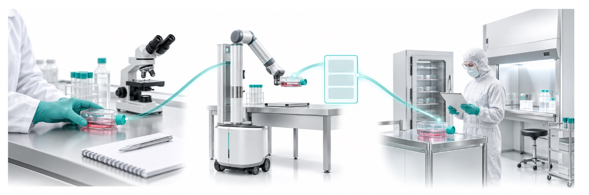
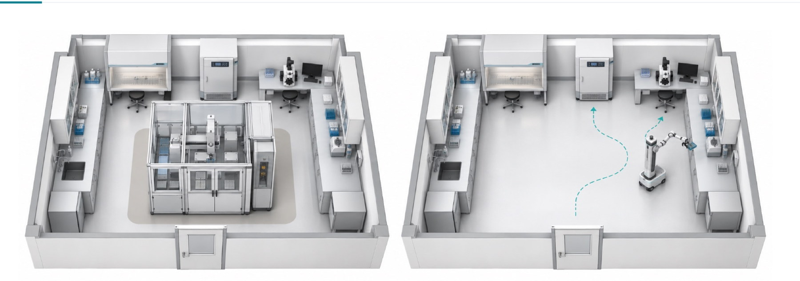
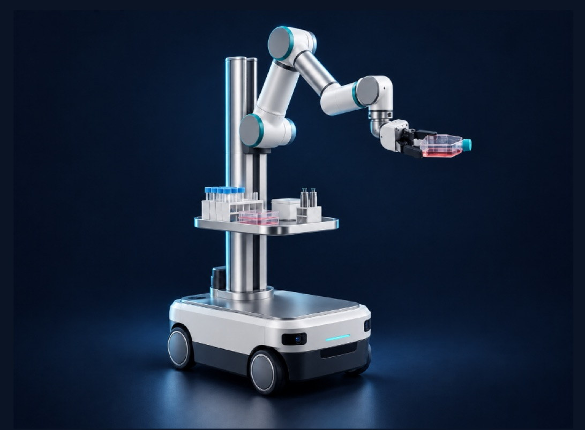
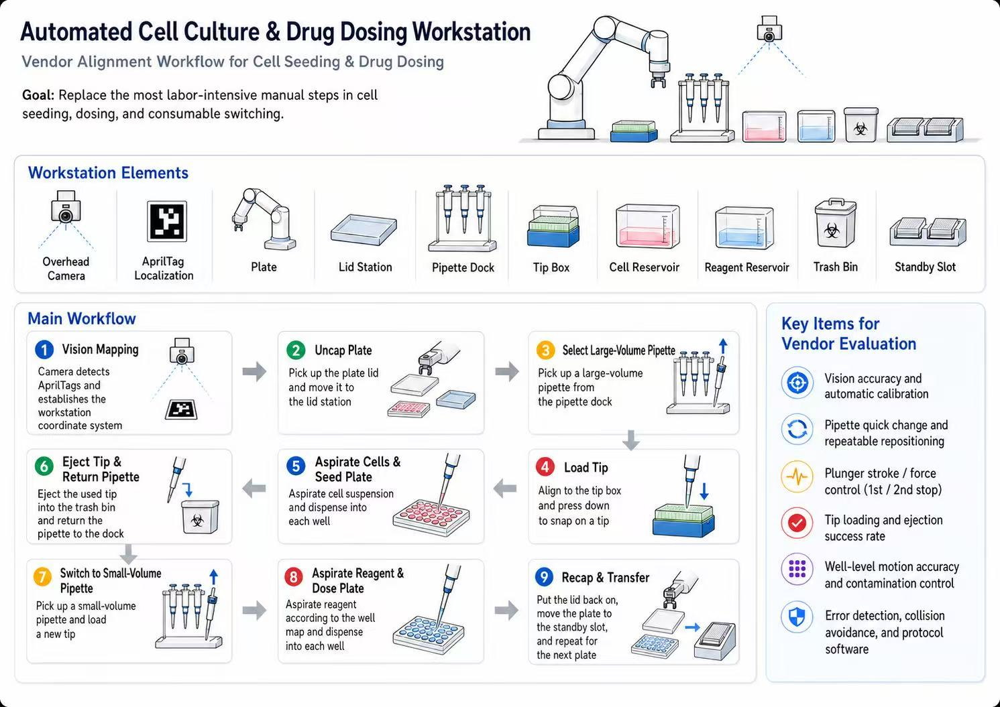

Process migration
What changes when the vessels, the medium and the handling change. Re-developed, re-validated, and paid for again at every transfer.
Engineering the Future of Cell Manufacturing
Explore Our SolutionsRegenerateActivateLive Brighter
Healthy Cells
Brighter Lives
Advanced robotics, artificial intelligence and stem cell engineering in a single platform — automated cell culture, intelligent differentiation control, real-time biological monitoring and AI-driven process optimization.
Our Technology01 The Problem
A cell therapy process is developed in a research lab, then has to be received and re-run somewhere else — a manufacturing partner, a hospital production centre, a second site. Receiving it means re-teaching the handling, re-mapping it onto different equipment and labware, repeating experiments, retraining people and re-validating the result.
What changes when the vessels, the medium and the handling change. Re-developed, re-validated, and paid for again at every transfer.
What changes when the room, the equipment and the way people move through it change. A purchase budget cannot buy floor space.

02 The Approach
Most cell automation asks a lab to change both things at once: adopt a new process format, and make room for a fixed workstation. Our entry point is to change neither. The mature culture conditions stay. The existing room, bench heights and equipment positions stay. What gets added is a robot that can reach them.
Flasks, plates and media the lab already validated remain the ones in use, so culture conditions do not have to be re-developed.
A mobile base moves along the lab's existing traffic routes instead of claiming a dedicated footprint, so a purchase does not depend on a renovation.
Incubators, biosafety cabinets and microscopes are docked with and handed off to, rather than replaced by a sealed cartridge system.
Each run produces a traceable record of what was done — which is what makes a process reproducible at the second site at all.

03 The Workflow
Registration first, then seeding, then dosing, then close out and start again. The pipette swap in the middle carries the most risk: that is where a tip is discarded, a second pipette is picked up, and the run has to stay sterile across the handover.
The overhead camera detects the AprilTags and establishes the workstation coordinate system — so the bench can be rebuilt without re-teaching every point.
The arm lifts the lid to the lid station, clear of the path the pipette will travel for the rest of the cycle.
Seeding moves more liquid than dosing, which is why the cycle carries two pipettes rather than one.
The pipette presses down to snap on a tip. The seal depends on that press, so force and alignment must both be repeatable.
Cell suspension is drawn from the reservoir and dispensed into each well — the step where well-to-well consistency is judged.
Nothing that touched the cell suspension continues into the dosing half of the cycle.
Dosing accuracy depends on this swap putting the second pipette in the same place as the first, every time.
Reagent is dispensed into each well according to the well map — the plan of which well receives which condition.
The lid goes back on, the plate moves to the standby slot, and the cycle restarts for the next plate.

04 The Machine
05 Evaluation
Six things decide whether candidate hardware can run this cycle unattended. They are listed in the order they would fail: a vision error puts every later position in the wrong place, while a dosing error only affects the plate in front of it.
How closely the camera resolves a tag, and whether the system can re-establish the coordinate system on its own after the bench is disturbed.
Whether the second pipette lands where the first one did, run after run.
Control of the first and second stop — what separates a clean dispense from a partial one.
Measured over a run, not demonstrated once. A tip that fails to seat spoils everything downstream of it.
Positioning tight enough to address an individual well, and a path that never carries one liquid over another.
What the system does when something is not where it should be — and whether the protocol can be versioned rather than hand-taught.

06 Why Now
Public datasets point the same direction: approved therapies are selling more, more companies are developing them, and more programs are entering trials. Every one of those programs needs cell handling done by hand, repeatedly, by trained people.
Growth in combined 2025 sales of six approved CAR-T therapies, reaching $5.89 billion.
Cell therapy developers counted worldwide, up from 796 a little over a year earlier.
Non-genetically-modified cell therapy programs in development, from preclinical to filing.
Figures are drawn from public filings and registries. Periods and sources available on request.

Patient-specific iPSC and differentiated cell libraries — engineered for reproducible, scalable clinical translation.

Bringing together global leaders in cell manufacturing and regenerative medicine.
Advancing cell medicine through global clinical and manufacturing collaboration.

Patient-specific iPSC programs for cardiovascular and rare disease.

A continuously learning data layer that improves quality, consistency and yield.

Wet lab collaboration for iPSC and MSC program development.
Cell manufacturing and clinical translation at industrial scale.

Research, partnerships and global impact across cell & gene therapy.
AI-Native CDMO
3rd Cell is building the next generation of AI-native Contract Development and Manufacturing Organizations — redefining how human cells are developed, differentiated and manufactured for biotechnology companies, pharmaceutical developers and research institutions.
Multi-robot collaborative workstations replace labor-intensive manual passaging, feeding and harvest.
Programmable protocols steer pluripotent cells toward cardiomyocytes, neurons, pancreatic beta cells and beyond.
Continuous in-process sensing keeps every batch inside specification, from expansion to final release.
A continuously learning system turns biological data into better cell quality, consistency and yield.
Scientific leadership from Stanford University School of Medicine brings over 22 years in stem cell research and clinical translation — including patient-specific iPSC and differentiated cardiomyocyte libraries representing hundreds of individuals, spanning directed differentiation, cardiovascular and rare disease, tissue engineering and cell manufacturing, with collaborations reaching FDA scientists and contributions to DARPA-funded research. Engineering and business leadership from Cornell University, the University of Texas at Arlington, the University of Texas at Austin and the University of Washington adds doctoral-level engineering, robotics industry experience, and deep hands-on expertise in robotic manipulation, intelligent automation and AI systems.